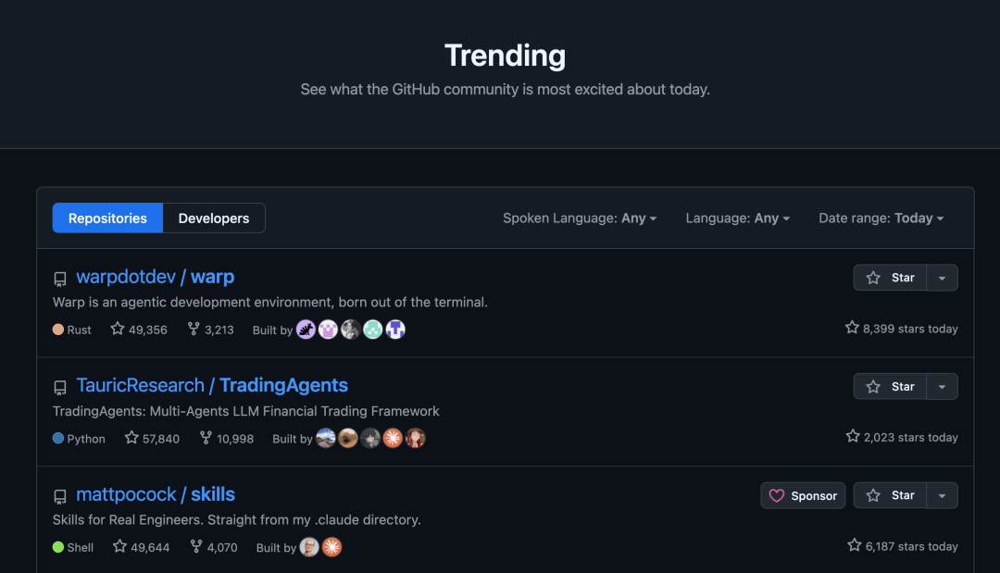
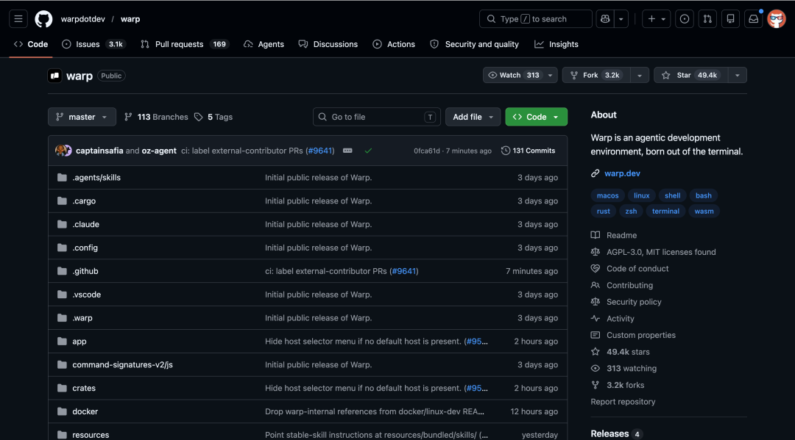
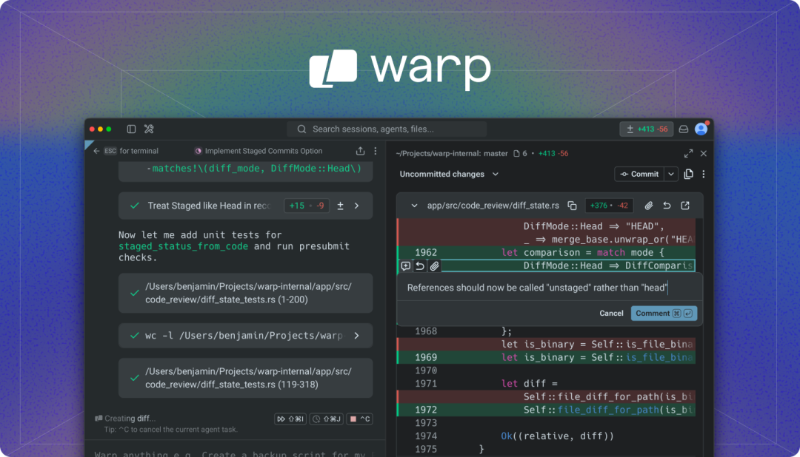
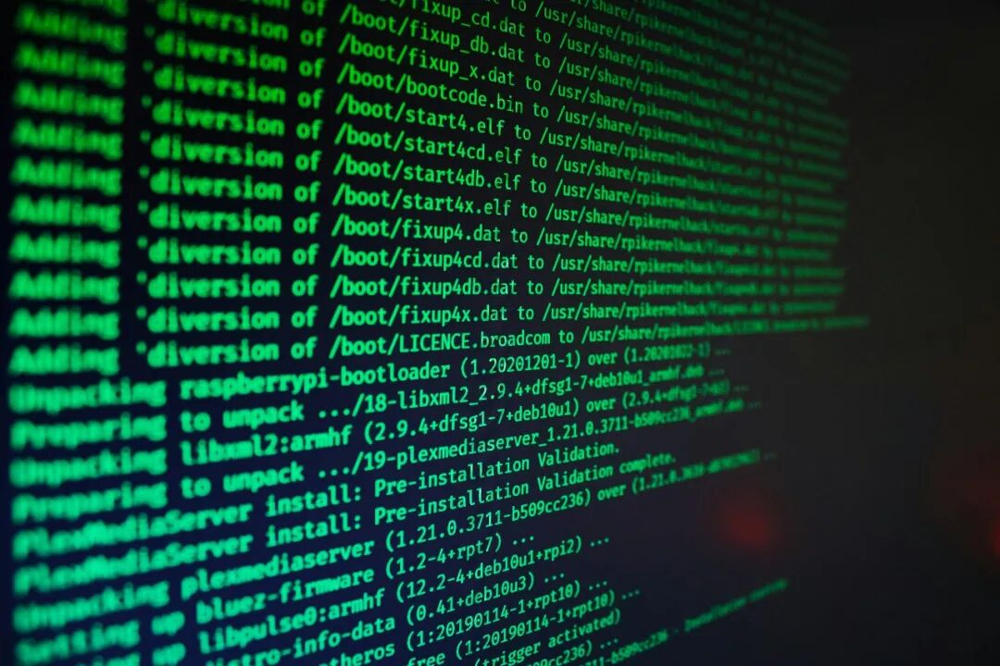
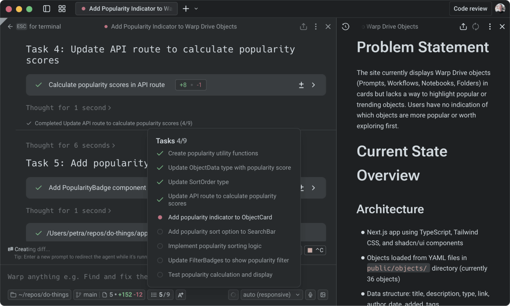
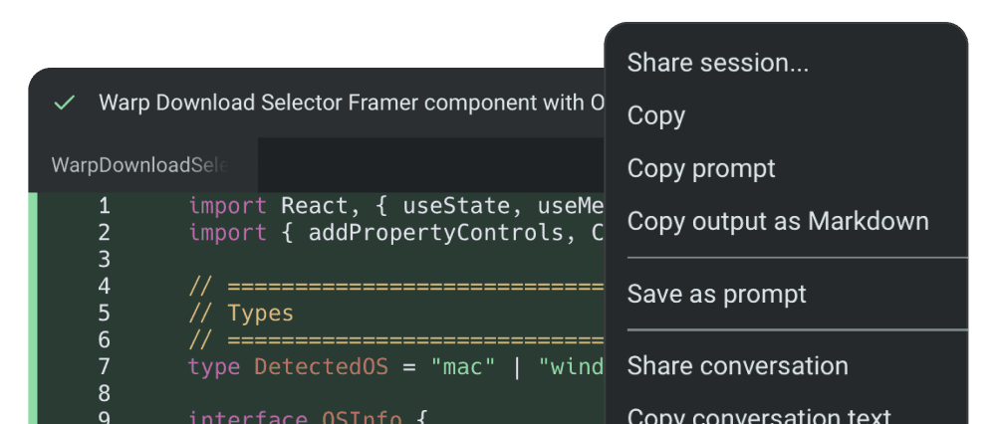

开源不到 24 小时就冲上了 3.5 万 Star。
现在总 Star 已经超过 5 万了，这个项目叫 Warp，是一个用 Rust 从零开发的 AI 终端。
准确说，它已经不只是终端了，官方给它的定位是 Agentic Development Environment，智能体开发环境。
它还被 TIME 评为 2025 年最佳发明之一。OpenAI 是这个开源仓库的创始赞助商。

01
开源项目简介
Warp 是一个 AI 原生终端，用 Rust 写的，支持 macOS、Linux、Windows 三大平台。
它不是在传统终端上套了个 AI 壳，而是从第一天起就按 AI 工作流设计的。
Warp 的核心思路很直接：把终端重新做一遍。
传统终端就是命令输入、输出、滚动、继续输入的死循环。
Warp 不走这条路，它用 Block 模型替代了传统的滚动输出。
每一条命令和它的输出被组织成一个独立的块，你可以像在编辑器里一样选中、复制、搜索、分享。
目前已经有超过 70 万活跃开发者在用。

创始人 Zach Lloyd 在博客里讲了三个开源原因：
第一，软件开发的方式已经变了。
AI 能完成大部分代码撰写，人类的核心工作变成了想清楚做什么和判断做出来的东西对不对。开源能让社区一起推动进步。
第二，更现实的原因。
他正跟资金更充足的闭源对手竞争，没法靠补贴打价格战，想通过开源打造更好的产品来突破。
第三，五年前他在 Hacker News 发布 Warp 时就承诺过会开源，这次是兑现承诺。

GitHub 地址：https://github.com/warpdotdev/warp02
和普通终端到底有什么不同
你可能觉得终端不都长一个样，黑底白字敲命令呗。
用了 Warp 之后你会发现，差别其实挺大的。
先说传统终端的痛点。

所有输出混在一起一屏滚动，想找之前某条命令的输出得往上翻半天。
复制粘贴靠鼠标框选，经常多选一行或少选一行。跑个长命令只能干等着，中间出了错一闪而过，还得重新跑一遍再看。
这些问题用了这么多年终端，大家都习惯了，但习惯不代表合理。
Block 块状交互。
Warp 把终端输出做了结构化处理。
每条命令和它的输出是一个 Block，自带元数据：命令内容、执行时间、工作目录、退出码等等。
你可以基于这些 Block 做搜索、过滤、分享。
比如你跑了一个构建命令失败了，可以直接把这个 Block 分享给同事，他看到的就是完整的上下文，不需要截图加文字解释半天。
这个设计说实话很实用，用过就回不去了。

AI 原生，不是后来加上去的。
你可以直接在 Warp 里调用内置的 AI Agent 来写代码、调试、重构，新的 Agentic 管理工作流由 GPT 模型驱动。
普通终端是先做好终端再想办法加 AI 插件，Warp 是从一开始就围绕 AI 工作流设计的。

内置了完整的 Agent 化开发环境，能直接接入 Claude Code、Codex、Gemini CLI、Opencode 这些外部 CLI Agent。
等于在终端里装了一个 AI 调度中心，你可以在这里统一管理和调用各种 AI 编程工具。
这次开源还新增了 Kimi、MiniMax、Qwen 等开源模型的支持，并加入了 auto (open) 自动路由功能，能根据任务智能匹配最合适的模型。
交互式代码审查。
以前 Agent 写完代码，你得切到 IDE 里看一遍，确认没问题再提交。
现在直接在 Warp 终端里就能逐行审查、加注释、一键丢回去让 Agent 改。
把 Agent 的工作完成度从 80% 推到 100%，这一步不用再切窗口了。
自研 GPU 加速 UI 框架
Warp 没用 Electron，也没用 Qt，而是完全用 Rust 从零写了一套 GPU 加速的 UI 框架，叫 WarpUI。
整个代码库有 60 多个 crate，Rust 代码占比 98%。
它的渲染速度极快，输入延迟几乎感知不到。在你疯狂敲命令的时候，不会出现某些终端那种卡顿和画面撕裂。
而且 WarpUI 这部分是 MIT 协议的，你可以把它拿到自己的 Rust 项目里用。
03
如何使用
方式一：直接下载安装
去官网下载安装包，支持 macOS、Linux、Windows：
https://www.warp.dev/download方式二：从源码构建
git clone https://github.com/warpdotdev/warp.gitcd warp ./script/bootstrap # 自动处理平台依赖./script/run # 编译并运行
bootstrap 脚本会自动处理 macOS、Linux、Windows 的平台差异。外部贡献者默认构建的是 warp-oss 开源社区版。
日常使用的话直接下载就够了。想参与贡献或者深度定制的，从源码构建会更灵活。
04
点击下方卡片，关注逛逛 GitHub
这个公众号历史发布过很多有趣的开源项目，如果你懒得翻文章一个个找，你直接关注微信公众号：逛逛 GitHub ，后台对话聊天就行了：